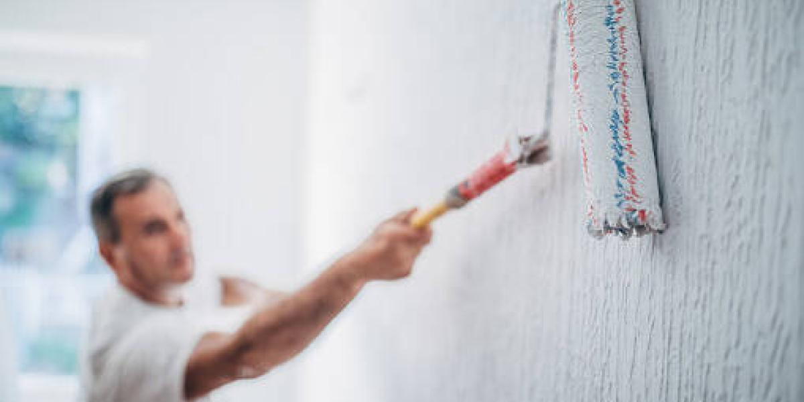

Obra Gris
Mampostería: Instalación y acabado de muros con materiales de alta calidad,
garantizando resistencia y durabilidad. Nuestro equipo está capacitado para trabajar con
diversos materiales como ladrillo, bloque y sistemas estructurales según las necesidades
de tu proyecto.

Pañetes: Aplicación de recubrimientos uniformes y resistentes para paredes
y techos. Utilizamos técnicas avanzadas y materiales de primera calidad para garantizar
superficies lisas y listas para acabados decorativos.
Alistado de pisos: Preparación y nivelación de superficies para acabados
impecables. Nuestro proceso asegura una base sólida y perfectamente nivelada para la
instalación de baldosas, porcelanatos o cualquier otro tipo de revestimiento.
Acabados
Estuco: Aplicación de estuco plástico y acrílico para interiores y exteriores,
creando acabados lisos y estéticos. Ideal para personalizar tus espacios con acabados duraderos
y de alta calidad

Pintura: Servicios de pintura profesional para interiores y exteriores.
Utilizamos productos de alta resistencia a la intemperie, asegurando colores vibrantes y
duraderos con acabados perfectos.

Construcciones Livianas: Construcciones Livianas: Instalación de cielo rasos, divisiones y estructuras
livianas adaptadas a tus necesidades. Nuestros sistemas son ideales para remodelaciones rápidas
y funcionales
Enchapes: Instalación de cerámicos, porcelanatos y otros revestimientos para
paredes y pisos. Nuestro equipo asegura acabados uniformes y precisos, ideales para baños,
cocinas y áreas sociales.
.png)